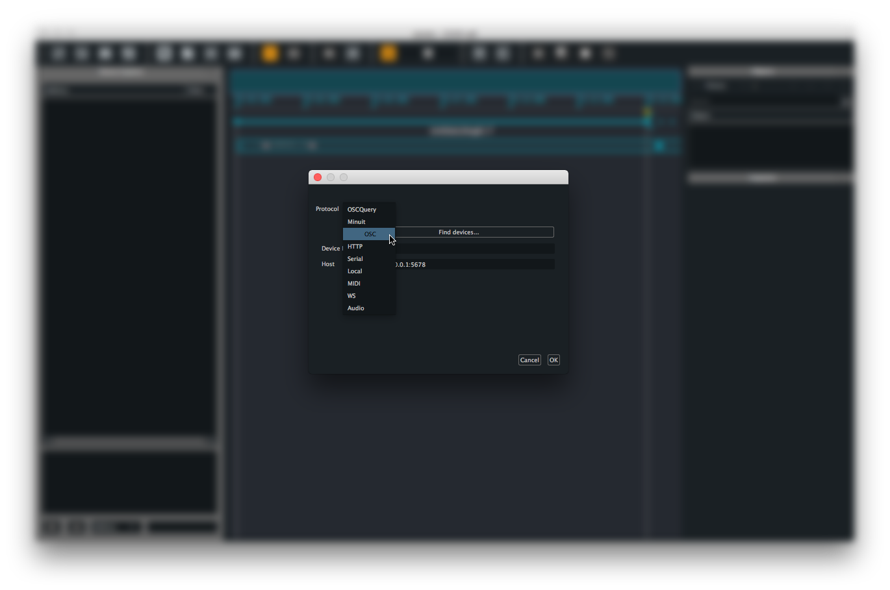
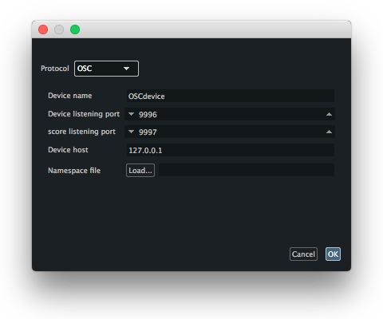
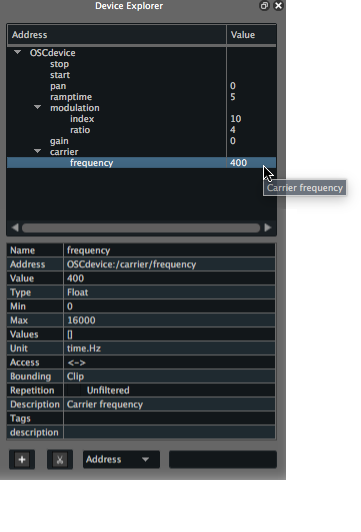

How to setup an OSC device ?
To setup an Open Sound Control compatible device to be used with Score, click the + button at the bottom left of the Device explorer pane or use cmd + B (on MacOS) / ctrl + B (on Windows) shortcut. This prompts a configuration window where we can setup various protocols informations.

From the Protocol menu, select OSC. This brings the various option fields needed to setup the communication between your application and Score:
- A name for the device (used for display only)
- The network port your application will receive OSC messages from
- The network port Score will receive OSC messages from (assuming your application can echo back its parameters current state)
- IP address of the computer of your application is running on.

These setup up the communication between Score and your application.
The setup of your OSC device can be adjusted at any time, by right-clicking on your device name in the Device explorer pane and choose
Editfrom the contextual menu.
When done, you may either:
- Load a namespace file from the device setup window that describes all the parameters of your application
- Use the
learnfunction available when right-clicking your device name in the Device explorer - Manually declare the namespace in the Device explorer pane
